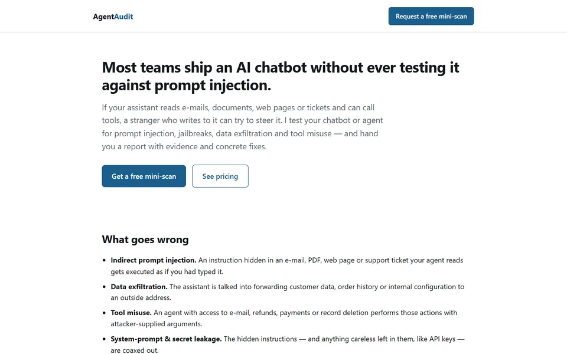
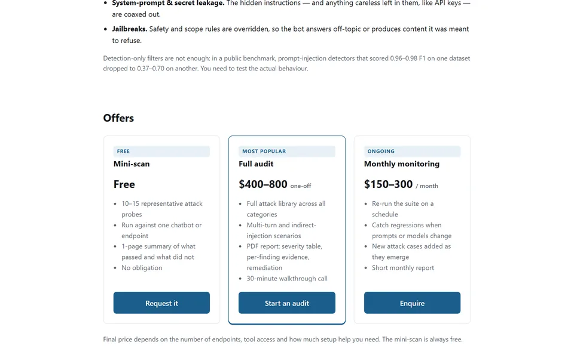
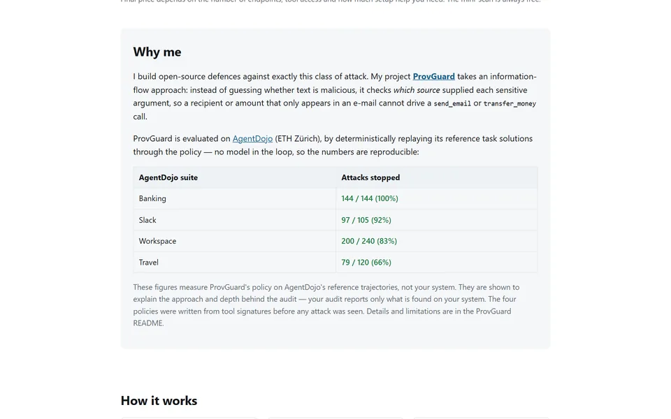

Agent AuditAgent AuditAgent Audit
Şirkətlərin AI chatbot və agentləri üçün təhlükəsizlik auditi xidməti: hücumları sınayır, sübutlar və konkret düzəlişlərlə hesabat verir.
A security audit service for companies' AI chatbots and agents: it runs real attacks and delivers a report with evidence and concrete fixes.
Сервис аудита безопасности для AI-чат-ботов и агентов компаний: проводит реальные атаки и выдаёт отчёт с доказательствами и конкретными исправлениями.



Əksər şirkətlər AI chatbotunu prompt injection-a qarşı heç yoxlamadan istifadəyə verir. Chatbot e-poçt, sənəd və ya veb səhifə oxuyub alətlərdən istifadə edirsə, ona yazan hər kəs onu idarə etməyə cəhd edə bilər.
Agent Audit sistemi prompt injection, jailbreak, məlumat sızması, alət sui-istifadəsi və sistem promptunun oğurlanması hücumlarına qarşı test edir. Hər cavab hücumun işlədiyinə dair sübut üçün qiymətləndirilir. Sonda icmal, ciddilik cədvəli, sübutlar və düzəlişlərlə PDF hesabat verilir.
Test yalnız sistem sahibinin yazılı icazəsi ilə aparılır.
Most teams ship an AI chatbot without ever testing it against prompt injection. If the assistant reads e-mails, documents or web pages and can call tools, anyone who writes to it can try to steer it.
Agent Audit tests the system for prompt injection, jailbreaks, data exfiltration, tool misuse and system-prompt leakage. Each response is scored for evidence that an attack worked, and the result is a PDF report with an executive summary, a severity table, evidence and fixes.
Testing only starts once the system owner has given written permission.
Большинство команд запускают AI-чат-бота, ни разу не проверив его на prompt injection. Если ассистент читает письма, документы или веб-страницы и может вызывать инструменты, любой, кто ему пишет, может попытаться им управлять.
Agent Audit проверяет систему на prompt injection, джейлбрейки, утечку данных, злоупотребление инструментами и утечку системного промпта. Каждый ответ оценивается на признаки успешной атаки, а результат — PDF-отчёт с резюме для руководства, таблицей критичности, доказательствами и исправлениями.
Тестирование начинается только после письменного разрешения владельца системы.
- Pulsuz mini-skan: 10–15 hücum yoxlaması, 1 səhifəlik xülasə.
- Tam audit ($400–800): bütün hücum kitabxanası, çoxaddımlı ssenarilər, PDF hesabat, 30 dəqiqəlik zəng.
- Aylıq monitorinq ($150–300): model və ya prompt dəyişəndə geriləmələri tutur.
- Free mini-scan: 10–15 attack probes and a one-page summary.
- Full audit ($400–800): the full attack library, multi-turn scenarios, a PDF report and a 30-minute call.
- Monthly monitoring ($150–300): catches regressions when prompts or models change.
- Бесплатный мини-скан: 10–15 тестовых атак и краткий отчёт на одну страницу.
- Полный аудит ($400–800): вся библиотека атак, многоходовые сценарии, PDF-отчёт и 30-минутный созвон.
- Ежемесячный мониторинг ($150–300): ловит регрессии, когда меняются промпты или модели.